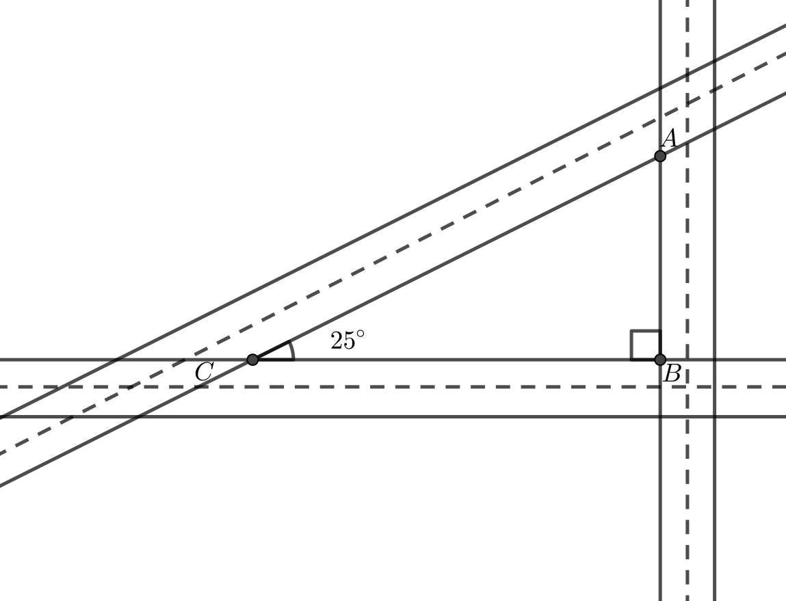
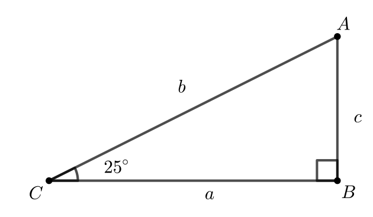

Problem of the Week
Problem E and Solution
Roads All Around
Problem
Tima owns a triangular parcel of land that is created by three intersecting roads, as shown. Two of the roads meet at a right angle and two of the roads intersect at a \(25^{\circ}\) angle. If the perimeter of the triangular parcel of land is 1000 m, what is its area to the nearest 100 m\(^2\)?

Recall: For any acute angle, \(\theta\), of any right-angled triangle, we define the following:
sin \(\theta= \frac{\mbox{opp}}{\mbox{hyp}}\), cos \(\theta= \frac{\mbox{adj}}{\mbox{hyp}}\), tan \(\theta= \frac{\mbox{opp}}{\mbox{adj}}\)
Solution
We will label the diagram as shown.

We know the following:
\(a+b+c=1000\) (1)
\(\dfrac{c}{b} = \sin(25^{\circ})\), and so \(c=b \sin(25^{\circ})\) (2)
\(\dfrac{a}{b} = \cos(25^{\circ})\), and so \(a=b \cos(25^{\circ})\) (3)
Substituting (2) and (3) into (1) we get: \[\begin{aligned}
b\cos(25^{\circ}) + b + b\sin(25^{\circ}) &=& 1000\\
b(\cos(25^{\circ}) + 1 + \sin(25^{\circ})) &=& 1000\\
b &=& \frac{1000}{\cos(25^{\circ}) + 1 + \sin(25^{\circ}) }\end{aligned}\]
\(b \hspace{2mm} \approx \hspace{2mm} 429.38\) m
Now, since \(a=b\sin(25^{\circ})\) and \(c=b\cos(25^{\circ})\), the area of the triangle is
\[\begin{aligned}
%$\dfrac{ac}{2} \approx \dfrac{(181.5)(389.2)}{2} = 35\,319.9$\\[1mm]
\dfrac{ac}{2} &=& \dfrac{(b\sin(25^{\circ}))(b\cos(25^{\circ}))}{2}\\
& =& \dfrac{b^2\sin(25^{\circ})\cos(25^{\circ})}{2}\\
&\approx& \dfrac{(429.38)^2\sin(25^{\circ})\cos(25^{\circ})}{2} \\
&=& 35\,308.4 \mbox{ m$^2$}\end{aligned}\] Therefore, to the nearest 100 m\(^2\), the area of the triangle is 35 300 m\(^2\).